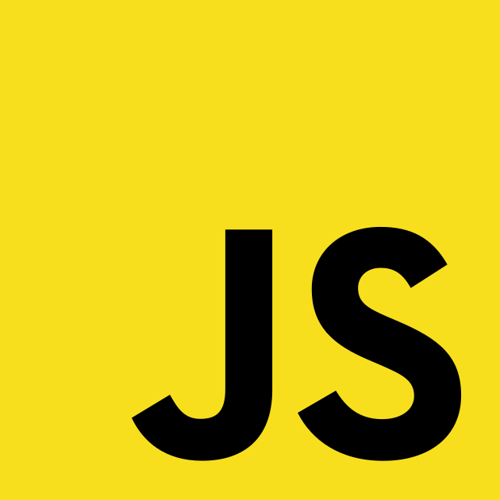

10mentionweb
Glossaire
- Déclaration
- Action de créer quelque chose en programmation : concernera souvent les variables
- Binaire
- fichier éxécutable
- Chaîne vide
- Un caractère signifiant qu'une chaîne est vide
- Compiler
- analyser un code et fabriquer un binaire
- Caster
- Opération de convertion d'un type de donné à un autre
- Console
- Zone permettant de consumter les messages produits par js
- échapper des caractères
- Enlever sa fonction à un caractère de simplement l'affiché
- Instruction
- Unité de code à lancer; fonctionne souvant ligne par ligne
- interpréter
- analyser un code et le faire éxécuter à l'ordinateur
- Saut de ligne
- Un caractère signifiant que le logiciel doit afficher un retour à la ligne
- Syntaxe
- Convention d'écriture d'un code informatique : JS va utiliser un certain nombre de symbole, de mot-clé et règle d'écriture de code : ce sont des conventions que nous appelerons SYNTAXE du language
- Variable
- élement de programmation qui va servir à contenir quelque chose : un nombre, chaine de caractère etc.. et sera enregistré au moyen d'un nom